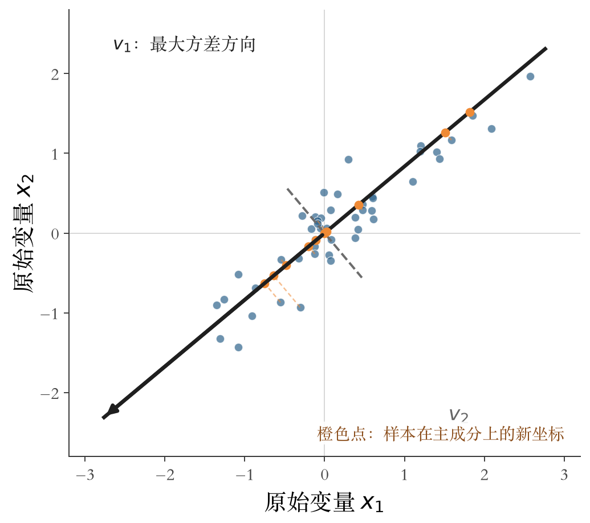
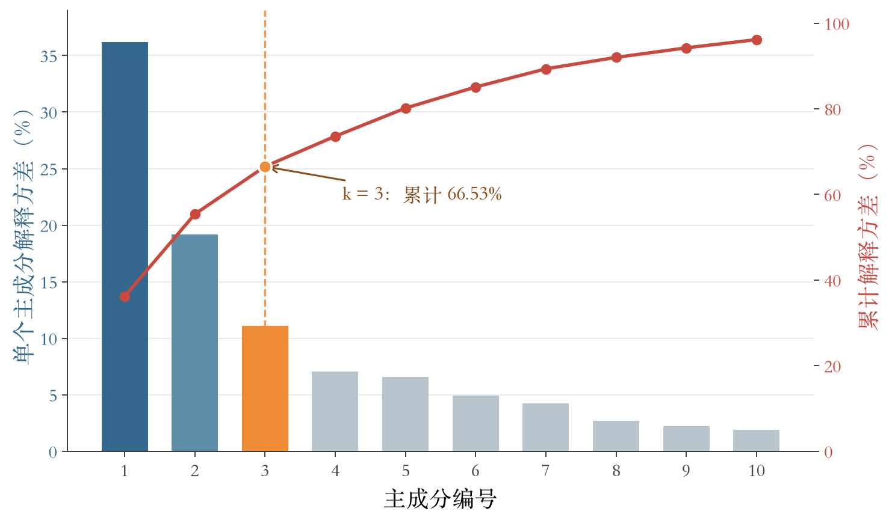
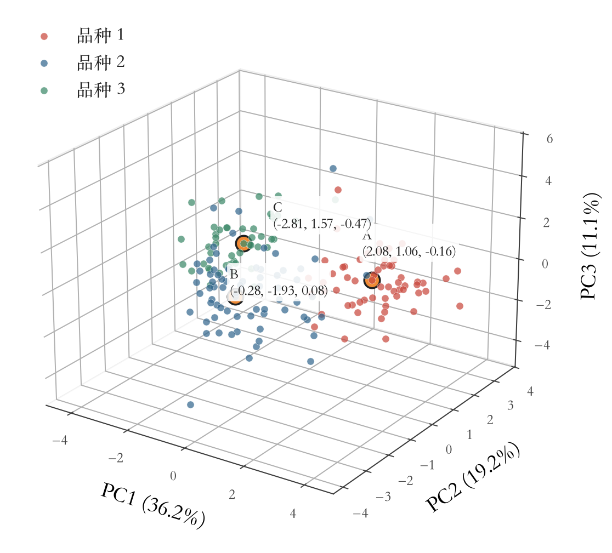

用更少的新坐标，保留尽可能多的数据差异
PCA 的目标：
它不是“随便删掉几列”，而是构造原始变量的线性组合。

记预处理后的样本为 $\tilde x_i$（中心化或标准化），单位方向为 $w$。 一维投影得分为：
$$ t_i=w^T\tilde x_i $$
投影后的方差：
$$ \operatorname{Var}(t)=\frac{1}{n-1}\sum_{i=1}^{n}(t_i-\bar t)^2 =w^T\Sigma w $$
其中 $\Sigma$ 是协方差矩阵。于是：
$$ \max_w\ w^T\Sigma w \qquad \text{s.t.}\qquad |w|_2=1 $$
构造拉格朗日函数：
$$ \mathcal L(w,\lambda)=w^T\Sigma w-\lambda(w^Tw-1) $$
对 $w$ 求导并令其为零：
$$ \Sigma w=\lambda w $$
因此：
记 $\tilde X$ 为中心化或标准化后的数据矩阵。对其做奇异值分解：
$$ \tilde X=USV^T $$
协方差矩阵（标准化时为相关矩阵）与 SVD 的关系：
$$ \Sigma=\frac{1}{n-1}\tilde X^T\tilde X =V\frac{S^2}{n-1}V^T $$
| SVD 中的量 | 在 PCA 中的含义 |
|---|---|
| $V$ 的列 | 主成分方向 |
| $US$ | 样本在主成分坐标中的得分 |
| $s_i^2/(n-1)$ | 第 $i$ 个主成分的解释方差 |
| $s_i^2/\sum_j s_j^2$ | 第 $i$ 个主成分的解释方差比例 |

| 主成分 | 解释方差比例 | 累计解释方差 |
|---|---|---|
| PC1 | 36.20% | 36.20% |
| PC2 | 19.21% | 55.41% |
| PC3 | 11.12% | 66.53% |
| 样本 | 原始维度 | 三维得分 $t_A=(PC_1,PC_2,PC_3)$ |
|---|---|---|
| A · 样本 20 | 13 | $(2.0845,\ 1.0611,\ -0.1647)$ |
| B · 样本 112 | 13 | $(-0.2787,\ -1.9306,\ 0.0787)$ |
| C · 样本 149 | 13 | $(-2.8071,\ 1.5705,\ -0.4725)$ |

| 主成分 | 主要方向权重与一种可能解释 |
|---|---|
| PC1 | Flavanoids $+0.423$、Total phenols $+0.395$ 解释：酚类/黄酮类轴 |
| PC2 | Color intensity $+0.530$、Alcohol $+0.484$ 解释：颜色—酒精轴 |
| PC3 | Ash $+0.626$、Alcalinity of ash $+0.612$ 解释：灰分—碱度轴 |
pca_metrics.json。先在标准化空间中重构，再换回原始尺度：
在本次 Wine 例子中：
| 可视化与探索 把高维样本投到二维或三维观察结构。 |
压缩与加速 减少存储量和计算成本。 |
| 去噪与共线性 丢弃小方差方向，构造互不相关的新变量。 |
异常与过程监控 观察样本在主成分空间中的偏离程度。 |